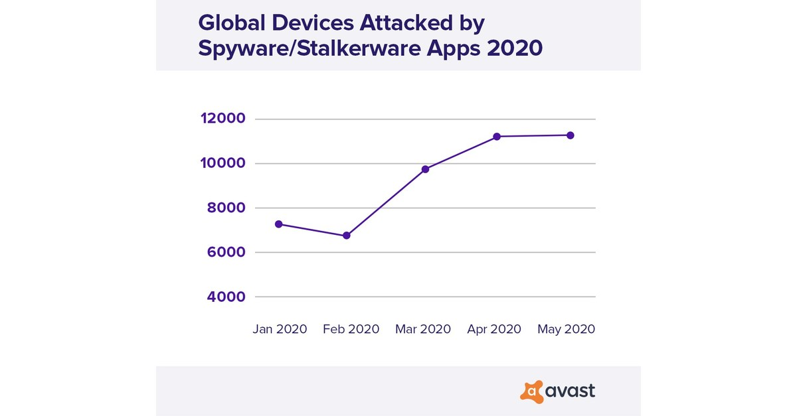
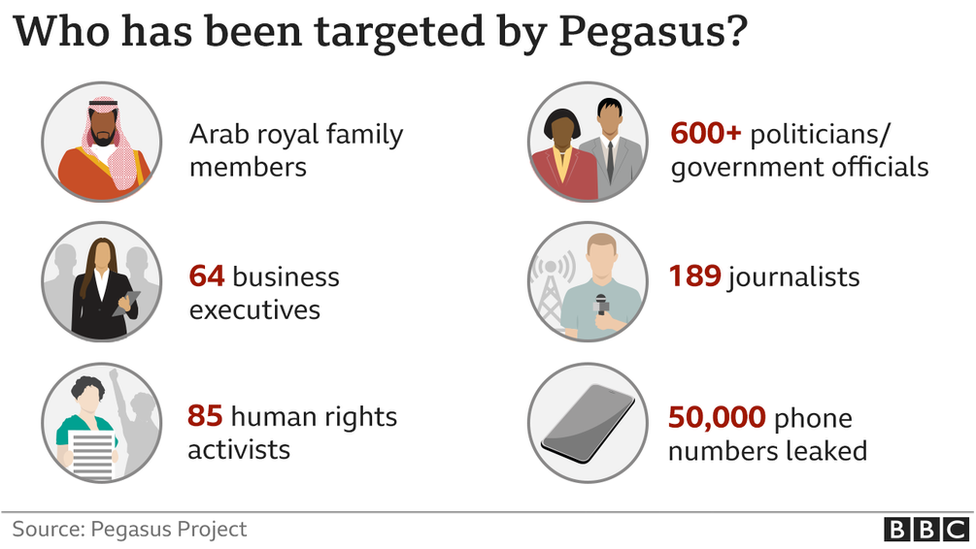
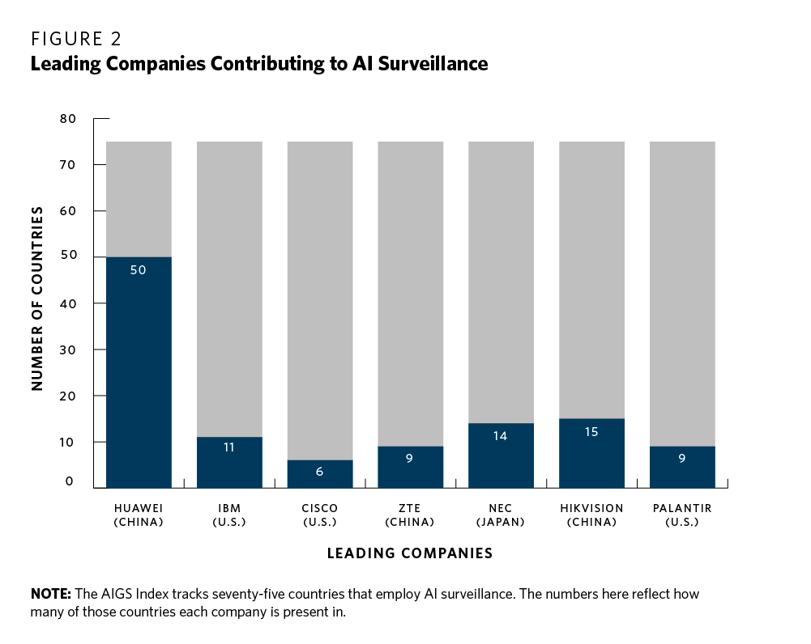
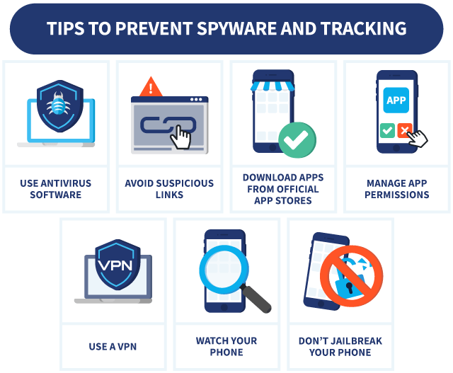

Identifying the concerns surrounding Electronic Surveillance and Spyware
More and more online attackers and countries are adopting AI surveillance technology and spyware to track
people. This increasing popularity in surveillance exacerbates existing concerns about privacy and personal
autonomy.

Definition of Spyware
Spyware is a type of malware that can monitor computer usage, and this can lead to
catastrophic consequences for people.
The Implications of this Problem
Many have been negatively affected by Surveillance Software.
Mass surveillance is now more accessible, efficient, convenient and cheaper than ever. According to a United
Nations report, digital technologies can effectively be used for mass surveillance, spyware, control and
oppression. Surveillance and spyware tools such as the “Pegasus” software, developed by the Israeli company
NSO Group, can be remotely installed on mobile phones to eavesdrop, harvest data and secretly spy and track
politicians, citizens, government officials and human rights activists. The spyware can covertly monitor
calls, text messages, locations and passwords without the knowledge of the device owner.
While this intrusion may be justified in fighting crime, the software frequently targets innocent individuals who
have little involvement with crime. This clear invasion of privacy demonstrates the many ways in which technology
can be misused for unethical and unreasonable ways to access and monitor people’s personal lives without consent.
More information about the software can be found below.
Surveillance tools offer governments and corporations with unimaginable power and authority over individual
privacy and autonomy. Mass surveillance interferes with people’s right to privacy and expression, which can
undermine democracy within society.
When will this STOP?
A clear line must be drawn at which it's acceptable and legitimate to invade personal privacy.
Electronic Surveillance
Understanding the Practices in Workplace Surveillance Technology
Individuals entering the workforce can expect to be surveilled. Corporations are utilizing surveillance and
sensor technology to monitor workers in an attempt to ensure productivity and efficiency, which raises concerns
about the invasion of privacy and mistrust between employers and employees at work.
Electronic surveillance and monitoring can lead to negative mental health and psychological effects, particularly
in corporate workplaces. 56% of workers who are monitored by their employer experience tension or
stress at work. Surveillance tools like GPS tracking, recording conversations, email and app
monitoring can result in decreased employee morale, feelings of distrust, lack of transparency and privacy,
and loss of integrity and autonomy for workers. In fact, studies show that electronic monitoring has no positive
benefits and contributes to a damaged workplace and counterproductive behaviour (i.e. employees are more likely to
cheat, work slower and slack off), and therefore, the costs outweigh any potential benefits.
Real World Examples
Analyzing the Ramifications through an Economic Lens
H&M
H&M collected sensitive data unrelated to employee performance such as their
employees' religion, medical status and family relationships. This data was collected without their knowledge
and was used to discriminate against employees for no valid professional reason.
Ikea
Ikea illegally developed a spying system to monitor their employees and collect data that was used to punish
and fire them. They hired investigators to track employees outside of the workplace and used covert video
surveillance.
Humanyze
Humanyze creates corporate ID badges with RFID sensors that use radio frequency
identification, accelerometer, microphones and Bluetooth to gather audio information and track the movement
and location of employees.
Amazon
Amazon patented an ultrasonic bracelet that detects the location and interactions of
a warehouse worker through ultrasonic sound pulses. This technology is highly invasive and and is a clear
violation of privacy. rights.
Why Does this Matter?
As technology becomes increasingly intrusive, workers are victims of inappropriate and invasive surveillance
technology. Workplace surveillance, if necessary, should be done with transparency, ethics and consent for a
more productive and efficient workforce, but these cases demonstrate illegitimate tracking and monitoring done
without consent outside working hours.
Limited consent and excessive monitoring and data collection without justified reason violate personal
privacy and contribute to a dystopian workforce where workers no longer feel safe. Technology has the
potential to revolutionize the workforce for the better and ensure workers can feel safe and exercise personal
autonomy. It’s time that digital surveillance tools and other technology are employed such that personal
privacy is not compromised.

TIPS TO COMBAT SPYWARE AND SURVEILLANCE
Regularly reboot to clean your device
Disable iMessage and Facetime as they are easily exploited.
Keep your mobile updated and install the latest patches
Don't click on any links in text messages
Use an alternate browser instead of default Chrome
Use a VPN, end-to-end encrypted messaging and HTTPS websites
Place tape over your device's camera to prevent spying

Please note that employees may have little control over how their employers choose to
monitor them. This website aims to provide feasible solutions and resources to help with privacy concerns about
surveillance.
Contact the organizations below for guidance if you feel that your privacy is being
wrongfully invaded with the use of these technologies.